1. Abstract
In this report, we will deal with the topic of stellar classification, which is determining an astronomical object based on its spectral characteristics. In particular, we will focus on building a classification algorithm to correctly identify whether the input object is a star, a galaxy, or a quasar. We will mainly rely on the values given by the photometric system to help us classify these objects.
The machine learning models used in this report include support vector machine (SVM), adaptive boosting with decision trees (AdaBoost), and artificial neural network (ANN).
2. Introduction
Stellar classification can be considered to be one of the most fundamental problems in astronomy, where the distinctions between different spectral objects lay the building blocks of studies often conducted in astronomy. To preface this report, we will first discuss the differences between the three classes.
Stars can be viewed as a building block of galaxies, where each galaxy may contain billions and even trillions of stars. On the other hand, quasars are extremely bright and energetic types of AGN (active galactic nucleus). The main difference between a quasar and a galaxy is that quasars will have a much more active central region, which is responsible for emitting high amounts of energy.
We are using the Stellar Classification Dataset, provided by SDSS17 (17th Data Release). This dataset houses 100,000 observations of space taken by Sloan Digital Sky Survey (SDSS), which is a major redshift survey conducted at Apache Point Observatory in New Mexico, USA. The original dataset contains 18 columns (the full data dictionary can be accessed at the Kaggle site); however, since we already decided our features to be the values collected from the photometric system, we will only be working with 6 columns (5 features and 1 response). The 5 feature columns are u, g, r, i, and z, which are the values obtained from 5 different filters in the photometric system. These values all mostly range between 0 and 100. The response column, or class, is one that reports on the object class; it is one of “STAR”, “GALAXY”, or “QSO”, the last of which stands for quasi-stellar objects.
The photometric system, often utilized in astronomy, is a set of filters that essentially work together to determine an object’s brightness. The idea is that an object will undergo different filters with each filter transmitting only a specific range of wavelengths. Through this process, an astronomer is able to measure the different intensities that pass through each filter, which can be combined to determine the overall brightness. Here, we deal with a specific set of filters: the ugriz filters, which the Sloan Digital Sky Survey most notably employs for their observations. The ugriz filters are made up of 5 filters (u, g, r, i, and z), which represent the ultraviolet, green, red, near-infrared, and infrared bands, respectively. To give a brief explanation of what each filter does, let us take the u band as an example. The u or the ultraviolet band will capture wavelengths within the ultraviolet section of the electromagnetic spectrum and will block off all the other wavelengths.
3. Data Preprocessing
Preprocessing the data was not a difficult process for this specific dataset and required less than 5 lines of code. There were no NA values and there was only one extreme outlier noted across all 100,000 observations. Therefore, we took steps to remove this observation. We then grabbed the 6 columns of interest as described above, and sampled 3,000 observations for each object class, resulting in a total of 9,000 data points to work with. There were two main reasons why we sampled like this; first was to obtain a balanced dataset. The disadvantages of an unbalanced dataset are that they often lead to biased results (as the majority class can dominate) and can produce misleading accuracy scores. Thus, having a balanced dataset is crucial in the context of machine learning. The second reason was to scale down the size of the dataset due to the computational cost; with the available computational power, we were not able to run some models on the full dataset.
After the preprocessing step, we proceeded to split the data into 80% training and 20% testing. Then, for each of these, we split it into the \(X\) (the predictors) and the \(y\) (the response), resulting in four sets defined as X_train, y_train, X_test, and y_test. We also encoded the labels for the response variable as integers (\(0,1,2\)) to ensure we can track which label is which when plotting the confusion matrix.
4. Exploratory Data Analysis (EDA)
Now that the data has been preprocessed, we will move on to performing exploratory data analysis. First, we printed a comprehensive summary table of our preprocessed data grouped by each object class:
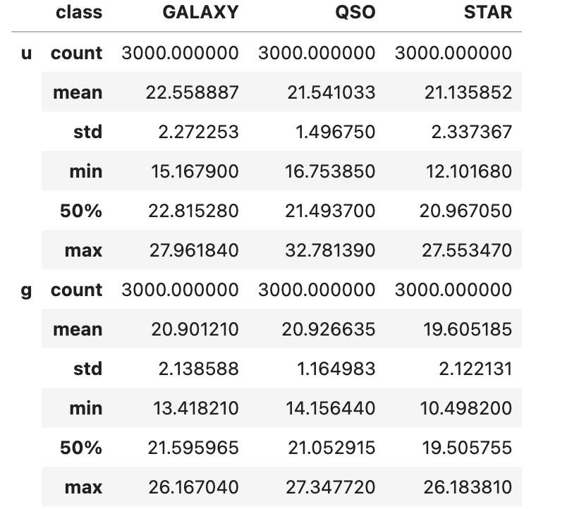
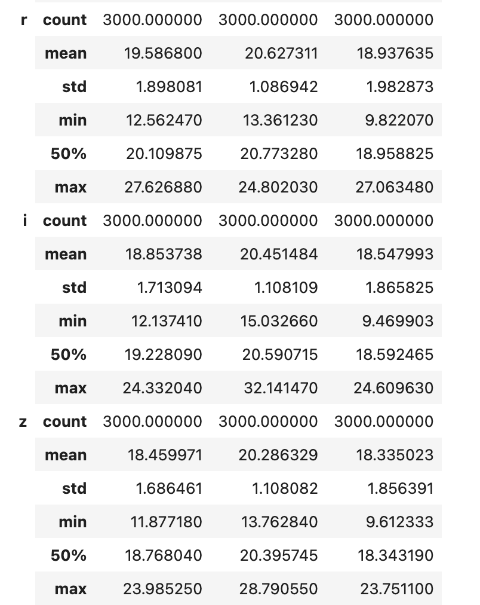
As we mentioned, there are 3,000 samples of each object class. Comparing the three classes across the 5 feature variables, there are only subtle differences; for example, we don’t see any outstanding differences in the mean values for each feature. However, some interesting takeaways are that quasars have the highest mean value recorded under four features and that stars have the highest standard deviation value recorded under four features as well.
To further investigate, we decided to produce a scatter plot of two features split across the different object classes.
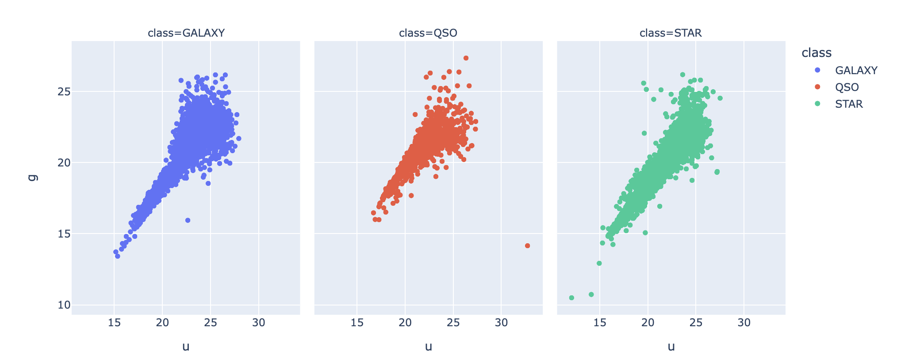
Above, we picked the two features to be u and g. Based on the above scatterplot, we observe that the shape of the plot for the quasars seem to be the smallest, while the other two extend out almost in a linear form. The shape of the plot for the galaxies has a region that is wider than that of the stars. Although subtle, these differences might be crucial for our machine learning models! Next, we decided to plot another feature variable, r, in the shape of a boxplot to wrap up EDA:
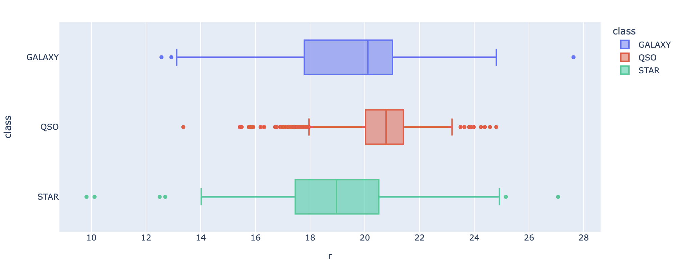
The above plot confirms a similar finding; the quasars have their data points in a tighter range when compared to the other two.
5. Machine Learning
a. Support Vector Classifier (SVC)
The first model we will be using is a support vector classifier. Support vector classifier (subbranch of support vector machine) is a supervised learning algorithm which can be particularly useful in a high-dimensional space. Through the selection of a proper kernel, this classifier is able to capture non-linear data and handle complex data well. However, one disadvantage is that it requires a lot of computational power for a large dataset; as we were running this algorithm, we noticed that this algorithm took significantly longer than the others. However, as our boundaries are highly non-linear, SVC proved to be a good choice.
To determine our parameters for SVC, we utilized GridSearchCV, which is an exhaustive search method over the specified values by the user. The idea of GridSearchCV is to utilize a cross-validation technique to find the best parameter values without overfitting the data. To operate GridSearchCV, we had to feed the algorithm with a grid of parameters and the algorithm essentially went through each unique combination of parameters and evaluated the mean testing score using cross-validation. The default cross-validation method under GridSearchCV is a 5-fold cross-validation, which is what we adopted when calling the algorithm.
For SVC in particular, the grid of parameters we prepared was setting the kernel to be either linear, rbf, or sigmoid and setting the regularization parameter (\(C\)) to be either \(0.1,0.5,1,5\) or \(10\). So, in this case, the GridSearchCV would essentially go through 15 pairs of parameters to determine which pair is the best.
To call GridSearchCV, we not only had to feed the parameter grid but we also had to insert the model pipeline. In the model pipeline, we had two procedures; the first was a StandardScaler() object that would scale the data and the second was a SVC() object that could be used to test the different parameters. After running GridSearchCV, we were given the following result:
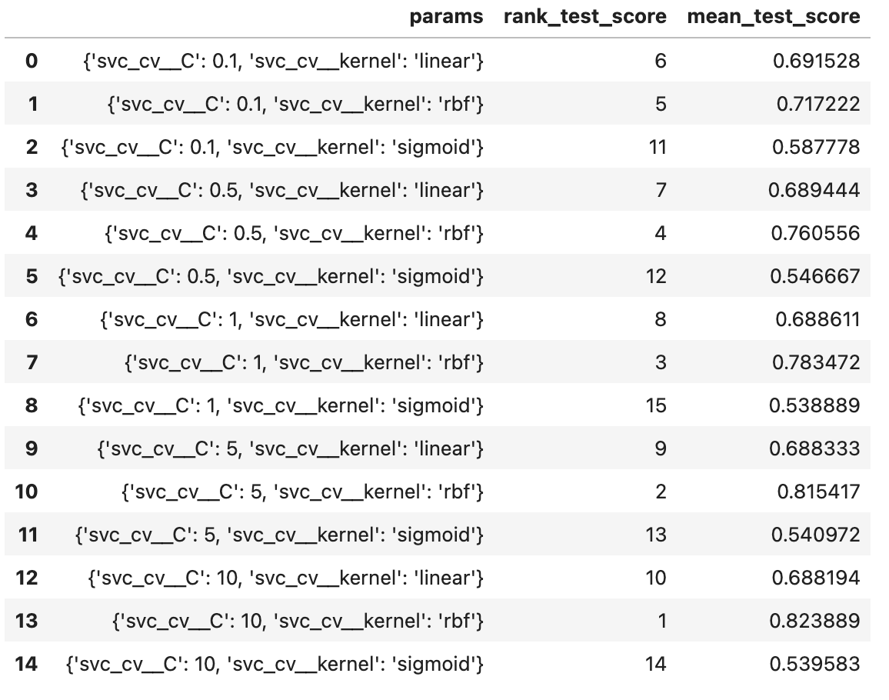
From the above table, we see that all the combinations of parameters are ranked from 1 to 15 based on which produces a higher cross-validation testing score. The only one we are really interested in is the first optimal choice, which is setting the kernel to be rbf and regularization parameter to be \(10\). Thus, we proceeded with those parameters and trained the model. After fitting the model and evaluating the score, we got an accuracy of \(\boxed{82.72\%}\), which is outstanding considering that our object classes only have subtle differences between them. Next up, we will plot the confusion matrix to see how this accuracy is distributed.
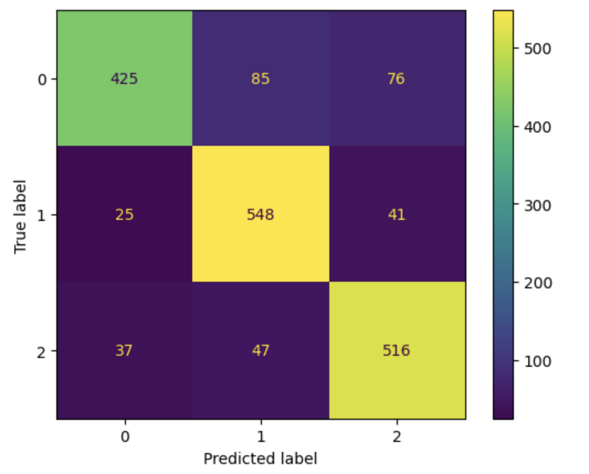
Based on the confusion plot, it seems like the model is struggling to correctly identify objects corresponding to class 0, which are stars. We will also plot the ROC (Receiver Operating Characteristic) curve as another form of error metric to see how well the model separates the different classes. A note here about the ROC curve is that it is typically meant for a binary classification; therefore, we will be adopting a slightly modified ROC metric. There are two major changes:
- We will be using a one-vs-rest (OvR) strategy where we take one class and compare it against the other 2 classes as a whole so it models a “binary” classification. We repeat this for all classes available.
- We will be taking the average of all the OvR metrics, otherwise known as taking the macro-average.
Taking the macro-average ROC curve, we get the following plot.
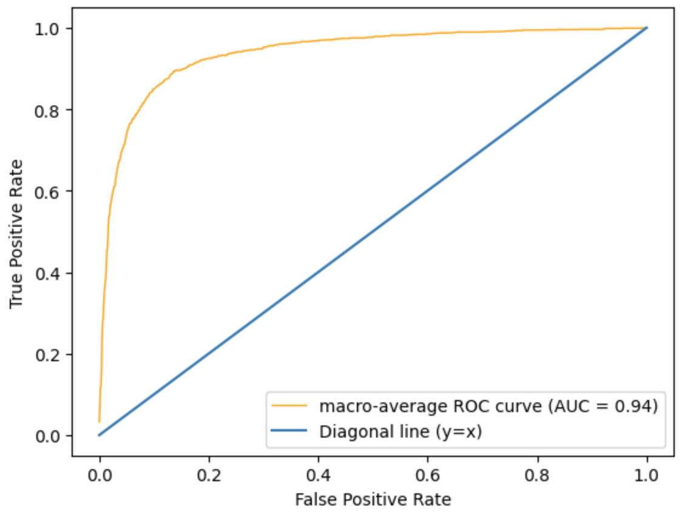
The AUC (Area Under the Curve) is 0.94, which is pretty high and close to a desired value of 1! This represents that the model is able to separate the different classes well.
b. Adaptive Boosting (AdaBoost)
The second model we will be using is adaptive boosting. To be more specific, we are using adaptive boosting in conjuction with decision trees. One advantage of using decision trees are that just like SVC, they are able to work with complex data well. Moreover, decision trees are highly flexible and easy to interpret. However, decision trees are prone to overfitting and is unstable to noise. The advantages of AdaBoost include that they tend to produce higher accuracies by modifying the weights based on misclassified instances and that it is able to use a simple estimator such as decision trees as its base classifier.
As we did with SVC, we will be tuning our (hyper)parameters using GridSearchCV. In this case, the grid of (hyper)parameters we prepared was setting max_depth to be one of \(4,8,12,16\) and n_estimators to be one of \(25,50,75,100\). Note here that max_depth is a hyperparameter for decision trees (since decision trees are non-parametric) and n_estimators is a hyperparameter for AdaBoost itself. The results are as follows:
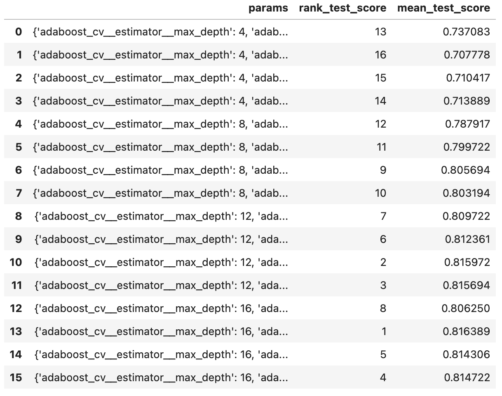
Using the above table, we find that the hyperparameters \(16\) and \(50\), respectively, give us the best mean score (the parameters are ordered the same way we input them). Using these hyperparameters, we get an accuracy score of \(\boxed{80.78\%}\), a value slightly lower than that resulting from SVC.
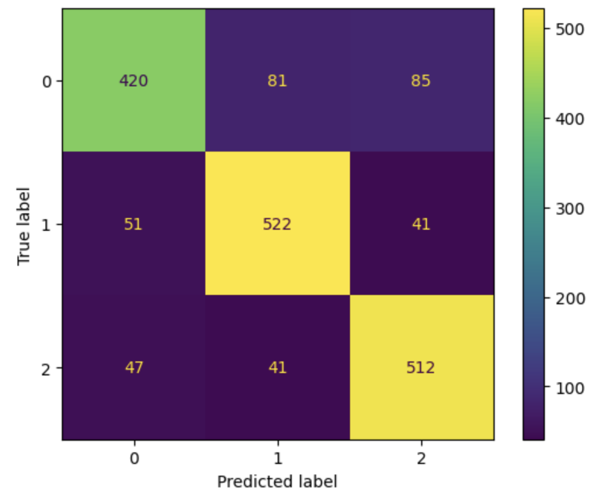
The confusion matrix for AdaBoost gives us a similar result as that of SVC: the model does a poorer job trying to predict stars. But also, AdaBoost’s accuracy falls a bit lower than SVC’s due to having more misclassifications of galaxies.
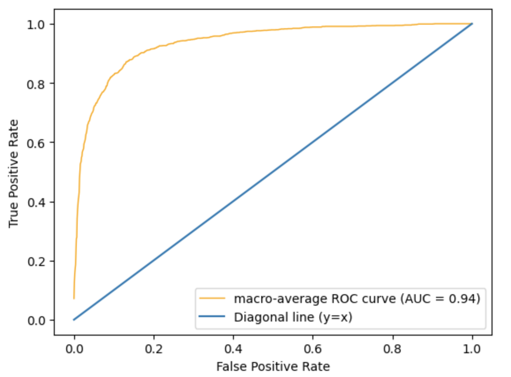
Using the same macro-average ROC method, we obtain the above graph. The above graph looks almost identical to that of SVC and even has the same AUC value of 0.94.
c. Artificial Neural Network (ANN)
The final model we will be using is an artificial neural network. We will be using Multi-layer perceptron (MLP) classifier, which is a part of ANN. The reason why ANN was chosen as one of the models was due to its versatility with respect to the hidden layer sizes. Also, as a deep learning architecture, performance keeps improving with more data. However, just as with SVM, computational cost is an issue for ANN, especially if there are numerous hidden layers.
The parameters we prepared for MLP will allow for 12 different combinations. We have the parameter activation to be set either to relu or tanh and we have the 6 choices for the parameter hidden_layer_sizes: \((2,2),(3,3),(4,4),(2,4),(3,6),(4,8)\). Thus, we will be using two hidden layers regardless of which parameters display the best result.
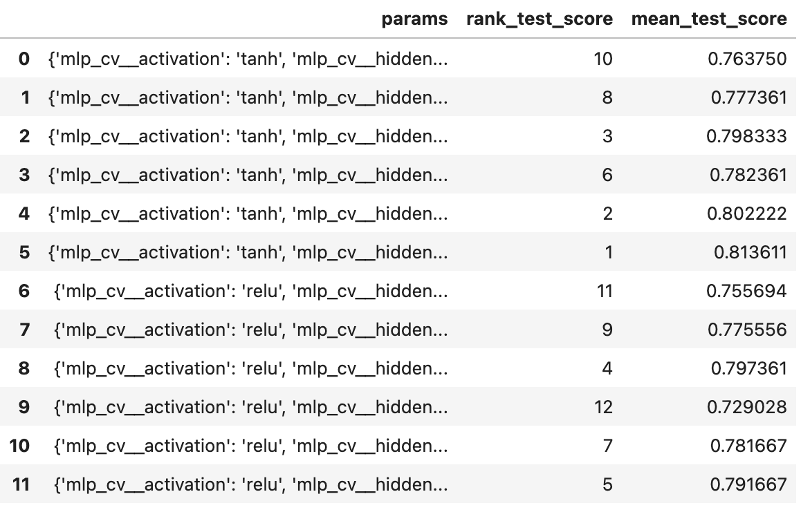
So, we use the parameters tanh and \((4,8)\) and achieve the accuracy score of \(\boxed{81.72\%}\), which falls right in between the accuracies of SVM and AdaBoost.
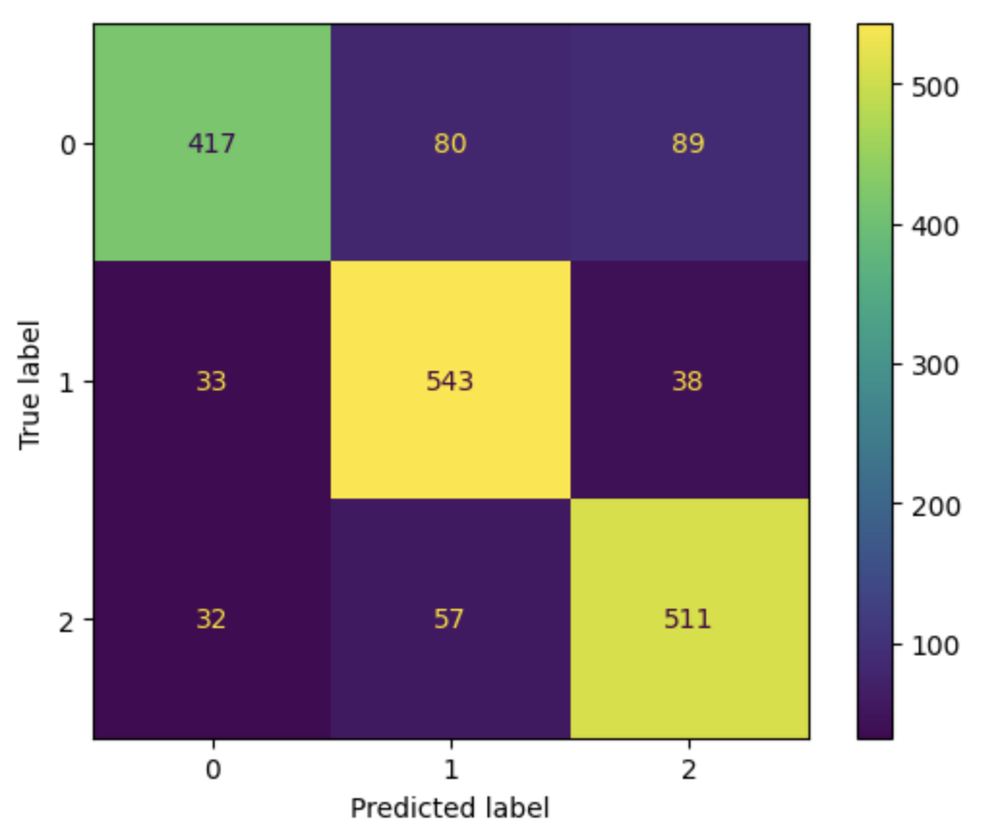
The confusion matrix also produces a similar result as the other two classifiers.
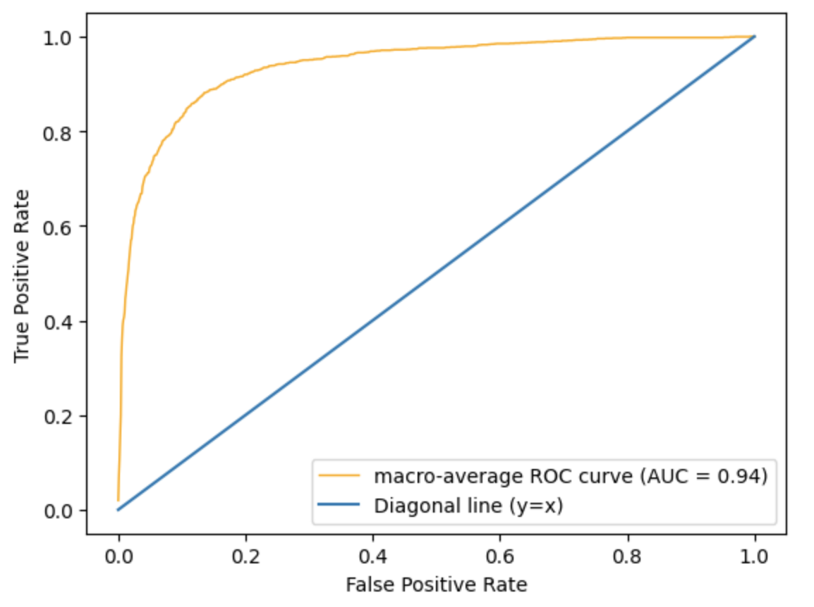
The ROC curve also looks identical to the other two. The AUC value is also 0.94 for ANN.
6. Conclusion
To summarize, we trained three different models (SVC, AdaBoost, and ANN) and used 3 error metrics for each model (accuracy score, confusion matrix, and ROC-AUC). The results were quite similar across all models. For example, the AUC value was the same for all three models at 0.94 and the ROC curves looked identical. The confusion matrix had subtle differences; however, it was a common characteristic that all three models had a difficult time classifying stars. Thus, we are only left with the accuracy scores to go off of. Ranking by the accuracy scores, SVC was the best classifier with about \(82.7\%\) accuracy and AdaBoost was the worst with about \(80.8\%\) accuracy. However, we must note that there is a tradeoff in achieving these accuracies. While it is true that SVC had the highest accuracy, the model took considerably longer when performing GridSearchCV and training. Considering the extra computational intensity, AdaBoost might not be the worst option as it only falls about \(2\%\) short.
Regardless of which model was truly the best, none of the models performed better than \(85\%\). As we saw in our exploratory data analysis, there were a lot of overlapping regions between the three object classes, which definitely made it difficult for the models to make accurate classifications. A future study could take a look at other feature variables and how they factor in with the values from the photometric system to improve the results.
7. References
- https://www.kaggle.com/datasets/fedesoriano/stellar-classification-dataset-sdss17/data
- https://arxiv.org/abs/2112.02026
- https://scikit-learn.org/stable/auto_examples/model_selection/plot_roc.html#one-vs-rest-multiclass-roc